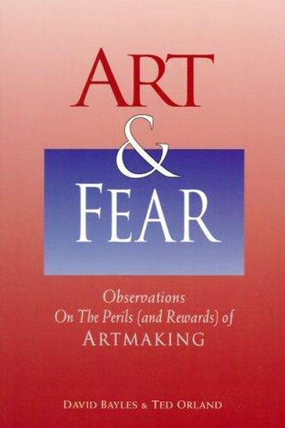

Library › Creativity
Art & Fear — Summary & Key Lessons

Observations on the perils (and rewards) of artmaking — the cult-classic that every creative keeps on their desk.
📖 OPEN THE FULL INTERACTIVE BREAKDOWN →🌐 Read it in Hindi, Hinglish, Gujarati, Tamil & 22 more languages — free, with audio.
💡 The Big Idea
This tiny cult classic by two working artists cuts through the mystique of artmaking: making art is a normal human activity, and the fears around it — fear of failure, of judgment, of being ordinary — are predictable, universal, and manageable. Their famous parable: a ceramics teacher splits the class into 'quantity' and 'quality' groups — the quantity group, making fifty pots each, produces the best pots, because the quality group spends the term theorizing about perfection and makes almost nothing. Art is made by making art.
🧠 The 6 Key Lessons
Lesson 1: The Quantity Story: Make More, Make Better
The Fundamentals
The book's opening parable: a ceramics class is split — half graded on quantity (50 pounds of pots), half on quality (one perfect pot). At the end, all the best pots come from the quantity group: they made, failed, learned, and made again, while the quality group theorized about perfection and produced almost nothing. Volume is the path to quality.
📖 Example: Bayles and Orland watched this happen for real — the 'quantity' students got their hands dirty daily, so their failures taught them; the 'quality' students never accumulated enough experience to learn anything at all. Read the full example →
⚡ Do this: Set a quantity goal this month: 20 bad drafts, 10 sketches, 5 songs — whatever the unit is. Quality emerges from the pile.
Lesson 2: Art Is Getting Something Down, Not Thinking It Up
The Fundamentals
Most creative paralysis comes from treating art as 'thinking something up' — as if the idea must be perfect before the work starts. But art is the opposite: it's getting something down, then working with what's there. The work teaches you what it is; you can't know it in advance. Ideas are cheap; the making is where meaning lives.
📖 Example: The authors describe artists who wait for the 'right' idea while their notebooks fill with sketches never made real. The ones who finish treat every piece as a step — including the ones that fail. Read the full example →
⚡ Do this: Start something today with a deliberately incomplete idea. Let the making complete it.
Lesson 3: Fears Are Predictable — Name Yours
Fears About Yourself
The book's taxonomy of fear: fear of being ordinary, of being judged, of not being 'real' artists, of running out of ideas, of being exposed as frauds. These fears are so universal they're boring — and that's the good news: predictable fears can be managed. Naming the fear (not suppressing it) is the first management step.
📖 Example: The authors note that fear doesn't discriminate: beginners and professionals feel the same dread before the blank page — professionals just have more evidence that they've survived it before. Read the full example →
⚡ Do this: Write down the exact fear that's blocking you right now ('my work is ordinary,' 'people will laugh'). Read it aloud. Then make one small piece anyway.
Lesson 4: Make Art for Your Audience of One
Fears About Others
Approval-seeking is the surest way to strangle your own work: if you make art for 'them,' you'll never know what you actually think, and 'them' keeps moving. The solution isn't ignoring audiences — it's knowing which one matters: the audience of one who shares your taste and standards. Make the work for them, and you'll make it for yourself.
📖 Example: The authors describe artists who chase trends and permanently lose their own voice, versus those who pick one trusted, exacting friend and make every piece for that person's eyes — they grow consistently because their standard never moves. Read the full example →
⚡ Do this: Name your audience of one — the person whose 'yes' you'd trust most. Make your next piece for them, and tell no one else about it.
Lesson 5: The System: Build a Life That Makes Art Possible
The System
Art doesn't happen in heroic bursts — it happens inside a system: regular time, a working space, materials ready, and a repeatable process. The authors' advice is unglamorous: organize your life so that making art is the path of least resistance. Talent gets you nowhere without a system that gets you to the work.
📖 Example: Bayles and Orland note that working artists don't wait for studio time — they build their days around it: same hours, same desk, materials out, phone away. The system, not the mood, is what produces a body of work. Read the full example →
⚡ Do this: Audit your system: where does your art time leak? Fix one thing this week — a dedicated hour, a ready desk, a standing appointment with yourself.
Lesson 6: Your Job Is to Make Good Work — Not to Be Good at It
The Nature of the Problem
Bayles and Orland's liberating distinction: making art is about the work, not about you as a person. Fear of producing bad work freezes makers because they conflate the work with their worth. When you separate the two — 'this piece is flawed' is not 'I am flawed' — failure becomes a step, not a verdict.
📖 Example: The authors note that most artists quit not from lack of talent but from the pain of self-judgment: every imperfect piece feels like proof of inadequacy. Those who keep making separate their identity from their output and treat each piece as practice. Read the full example →
⚡ Do this: Next time you judge your work harshly, rewrite the thought as 'this piece needs work' — and note the difference in how you feel.
✅ 5-Step Action Plan
- Run the quantity experiment: volume target, not quality target, for a month.
- Start something with an incomplete idea and let making finish it.
- Name your blocking fear in one sentence and make something anyway.
- Designate your audience of one and make the next piece for them.
- Fix one leak in your creative system — time, space, or materials.
⚠️ When This Doesn't Work
Bayles & Orland's 'the fear is part of the work' is the most honest book about creative anxiety ever written — and Decca Records is its dark mirror: the label's A&R men rejected the Beatles in 1962 because they feared 'guitar groups are on the way out.' They were professional gatekeepers, terrified of being wrong, and their fear produced the most expensive mistake in music history. The book's lesson cuts both ways: fear blocks the artist, and fear also blocks the people who decide what art gets seen. Your fear of creating is shared by everyone who could publish you — understand it, and understand theirs.
💀 The Graveyard Proves It
🎸 Decca Records — 'Guitar Groups Are on the Way Out'. Burn: The Beatles. Read the full case study →
💬 Best Quotes from Art & Fear
- “The ceramics teacher announced on opening day that he was dividing the class into two groups... the group graded on quantity alone produced all the best pots.”
- “Making art is not about having a gift — it's about the willingness to make bad art in the service of good art.”
- “Art is not about thinking something up. It is the opposite — getting something down.”
Interactive version: mark lessons as read, listen in your language, share quote cards.